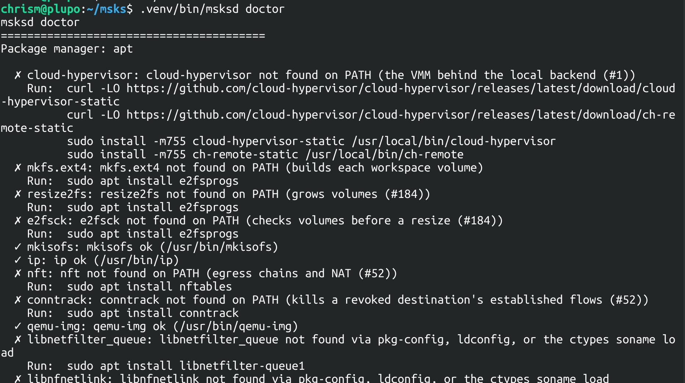

The host doctor¶

msksd doctor checks the host for the external tools and libraries used by the
daemon and the client exec at runtime, and tells you how to fix problems. Run
it when a host is newly prepared, when a refusal names a missing tool, or
before a deployment first serves:
The command takes the same --config flag the daemon takes.
It therefore checks the tools this host's daemon will actually
exec: the config's tool paths and the environment apply. See
Configuration for the settings and their
precedence.
What it checks¶
The errors cover the dependencies, and the cloud-hypervisor VMM and various configuration settings. The check set covers runtime requirements only. Debugging and development tools stay out of it.
Tool names resolve on the daemon's search path, not the
caller's: the session's own PATH answers first, then Debian's
admin directories (/usr/local/sbin, /usr/sbin, /sbin),
because the systemd user manager's default PATH carries them —
the daemon finds what a non-root login shell cannot type. A
session whose PATH lacks the directories still gets the
daemon's truth, and when a tool was found only through them,
the run adds a warning row suggesting the relogin (the setup
tool's ~/.profile block) or the PATH= export. A daemon
started by hand inherits the session's PATH, so the row's fix
reaches that shape too.
One check grades by platform, not by a tool: on an Apple Silicon host (cpu0's MIDR names Apple's implementer — the Asahi Linux class), the report carries a warning row naming the kernel's guest-interrupt limitation (#649) — workspaces start and their kernels boot, then stall before ssh answers, while everything short of a guest boot works. The row fires only where the condition exists; x86_64 hosts and non-Apple arm64 servers get no row.
Reading the report¶
Every row prints with a marker:
- ✓ — present and functional: the binary answered its version probe, the library answered one of its three probes, the binding loaded.
- ⚠ — a warning-grade miss: a degraded path the daemon does not need (the ssh/rsync pair), or a config that failed to load.
- ✗ — an error-grade miss: a core-path dependency the daemon needs.
Each miss carries an install hint matched to the detected package manager,
printed as a paste-ready command sequence under the row. The hints match each
manager's real package names: genisoimage serves mkisofs, qemu-utils
ships qemu-img, etc.
Where a fix is not a distro package, the hint names the real source: cloud-hypervisor installs from the upstream static release, which Debian's archive carries in none of its suites.
The run ends with a tally (14 passed, or 12 passed, 1 error,
1 warning). When anything failed, a closing block repeats every
miss with its fix. The exit code is 0 when every check passes or
only warns, and 1 when any check errors.